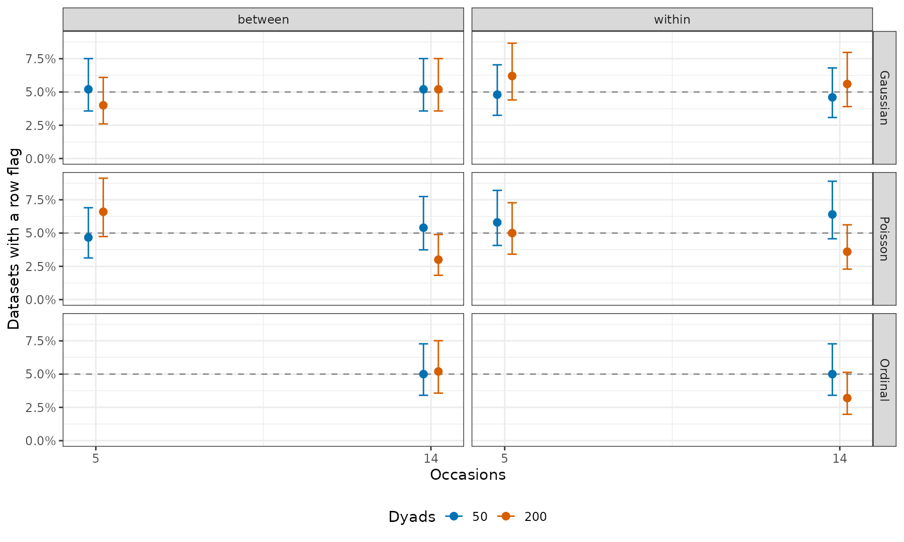
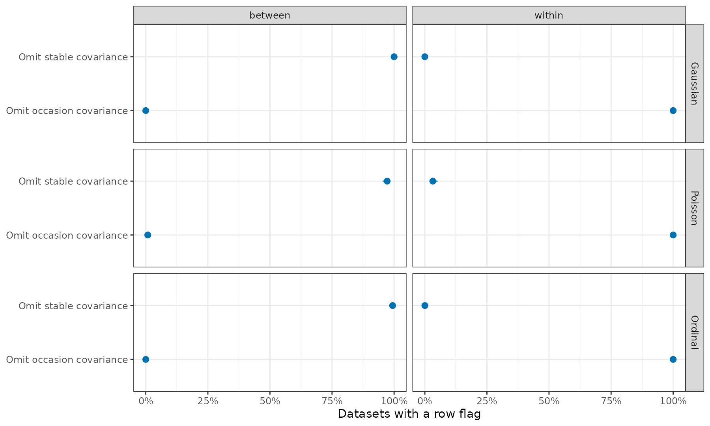

Partner-dependence checks for longitudinal data
Source:vignettes/articles/ild-partner-dependence.Rmd
ild-partner-dependence.RmdSummary
The saved run targets 500 datasets per setting and 1000 reference simulations per fitted model, across 48 settings. The results describe these simulated settings. They do not establish calibration for every supported model.
- Correct restrictions rarely flag. When a fitted covariance restriction was true, the partner correlation it targets flagged in 3–7% of datasets.
- Omitted partner covariance shows at its level, given enough dyads. It was detected in at least 97% of datasets with 200 dyads and 14 occasions, but in as few as 31% with 50 dyads and 5 occasions.
- Omitted autocorrelation is not detected. A model without AR, but with unrestricted covariances, flagged in 0% of datasets despite strong autocorrelation (φ = 0.7). Check autocorrelation separately.
- Lagged outcomes as predictors can make the checks misleading. Flag rates were 0–100%, depending on the family and on model-centring.
What the study checks
check_partner_dependence(member = person, time = occasion)
compares the model’s simulations with the observed responses at two
levels: member means (between) and deviations
from those means on shared occasions (within). This study asks
how often these checks flag under correct covariance restrictions, and
what they detect when a restriction is wrong.
The fitted models have two partner covariances: a stable one between partners’ random intercepts, and an occasion one between their dyad-occasion random effects. Each omission should show at its targeted level: the between level for the stable covariance, and the within level for the occasion covariance.
A row flag means that one observed statistic (one
row of the check’s summary) lies outside the middle 95% of
its simulated values. Each level has its own figure. A figure
flag means that at least one row in that figure flags. These
are descriptive checks. The dashed 5% line in the false-alarm figure is
a benchmark for individual rows, not a promised rate or a figure-level
threshold. Summaries freely estimated from the same data may flag much
less often.
Design and interpretation
All settings use female-male dyads and the generator’s fixed-effect terms, including role intercepts and actor/partner predictors. Gaussian settings vary the number of dyads (50 or 200), occasions (3, 5 or 14), and missingness (0% or 20%). Poisson and ordinal settings use 50 or 200 dyads and 5 or 14 complete occasions. AR and lagged-outcome settings use 50 or 200 dyads and 14 complete occasions. Missing occasions are removed independently per member. A retained response still contributes to its member’s mean when the partner is missing. Non-lagged actor/partner predictors are generated independently between partners at both levels.
Gaussian and Poisson models either retain both covariance blocks (the full model) or set stable or occasion partner covariance to zero. Ordinal outcomes have four categories, a probit link and a shared dyad-occasion intercept instead of an unrestricted occasion block. Separate settings make each covariance restriction true. Additional Gaussian models impose equal occasion variances or omit AR(1) dependence. Lagged-outcome Gaussian and NB2 fits are practical sensitivity analyses: their predictors depend on earlier outcomes, so they are not clean calibration controls.
Every reference simulation draws new random effects and responses, while keeping fitted parameters and predictor values fixed. Models are not refitted. Checks subtract the same fixed-effect predictions from observed and simulated responses (model-centring). The lagged-outcome table also shows raw checks, which skip this step. Each dataset then supplies its own member means. Nonlinear links and short series can let a misfit at one level affect summaries at the other.
Plots and tables below use fits with optimizer convergence, a
positive-definite Hessian and a finite log-likelihood. Gaussian models
use BFGS, and other families use nlminb. Failed fits are
not retried. The saved tables also report all available checks,
including fits that fail those criteria, and preserve failures
separately.
The denominator of each rate is the number of datasets for which that check was available in the stated fit subset. Each table row counts one family’s models across all settings. A single generated dataset may supply several fitted models.
| Family | Attempted | Usable | Optimizer failures | Hessian problems | Fit errors | Check errors |
|---|---|---|---|---|---|---|
| Ordinal | 10000 | 9995 | 5 | 0 | 0 | 0 |
| Gaussian + AR | 5000 | 4999 | 0 | 1 | 0 | 0 |
| Poisson | 14000 | 13975 | 25 | 7 | 0 | 0 |
| Gaussian | 32000 | 31979 | 0 | 21 | 0 | 0 |
| Gaussian + lags | 1000 | 1000 | 0 | 0 | 0 | 0 |
| NB2 + lags | 1000 | 1000 | 0 | 0 | 0 | 0 |
Flags use rank limits from the ordered simulated values, as
check_partner_dependence() does. Interpolated quantiles
would change per-row rates by at most 2.6 percentage points. Including
fits that failed the usability criteria changed per-row rates by at most
1.0 percentage points.
Error bars and brackets are 95% Wilson intervals for flag rates. Monte Carlo SEs describe uncertainty from the number of generated datasets. Neither measures uncertainty in an individual model’s fitted parameters.
The full tables retain all statistics, missingness settings, sample sizes, figure-level rates and Monte Carlo SEs. See the study code, design and run instructions.
False alarms under a true restriction
Here the fitted covariance restriction is true. Each panel shows the partner correlation row at the targeted level: zero stable covariance at the between level, or zero occasion covariance at the within level. Rates for other rows remain in the saved tables. These true-restriction settings use complete data and 5 or 14 occasions (only 14 for ordinal outcomes).

A flag anywhere in either figure occurred in 4.0–8.8% of these datasets, and in 0.0–6.4% for full models.
Detection at both levels
These panels use 200 dyads, 14 complete occasions and nonzero partner covariance at both levels. They show how omitting either covariance affects the partner correlation row at both levels. A flag does not by itself locate the source of the mismatch.

Missing occasions lowered detection: in Gaussian data with 50 dyads and 3 occasions, occasion-covariance detection fell from 88.8% to 58.5% with 20% missing member occasions. The partner-correlation row at the other level flagged in at most 3.2% of these datasets. In the Gaussian settings, where the two roles’ true occasion SDs differ by a factor of 1.5, the within-level dyad-average/role-difference correlation detected incorrectly imposed equal occasion variances in 90.8–100.0% of datasets.
Flags and estimates
A flag shows that the model misses a feature of the data. It does not show whether the estimates you report are affected. A separate Gaussian run (50 or 200 dyads, 14 occasions, predictors independent between partners, 500 datasets per setting) fitted the full model and one restriction at a time:
- At 200 dyads, an occasion partner correlation of only .1 was flagged in 99.6% of datasets. Dropping it still left 95% interval coverage at 95–96%.
- At 200 dyads, dropping a stable partner correlation of .4 lowered the average intercept’s coverage by 5 points, to 87%. It also made the role-difference interval too wide (99% coverage). The actor and partner slopes were not affected.
- At 50 dyads, a stable correlation of .2 was flagged in only 23% of datasets. Dropping it still cost the average intercept 2 points of coverage.
So when both models fit, compare the estimates and SEs you plan to report.
Serial dependence and lagged outcomes
Omitted autocorrelation raises two questions: does it cause false alarms for other restrictions, and does the check reveal it? The generated data have AR(1) dependence (φ = 0.7) or none (φ = 0, the control), and the models in this section omit it. One model also imposes equal occasion variances for both roles, which is true here. The table shows the row that checks this restriction: the within-level dyad-average/role-difference correlation.
| Dyads | AR coefficient | Checked | Flag rate [95% interval] | Monte Carlo SE (%) |
|---|---|---|---|---|
| 50 | 0.0 | 500 | 5.4% [3.7, 7.7] | 1.01 |
| 50 | 0.7 | 500 | 8.4% [6.3, 11.2] | 1.24 |
| 200 | 0.0 | 500 | 6.4% [4.6, 8.9] | 1.09 |
| 200 | 0.7 | 500 | 8.2% [6.1, 10.9] | 1.23 |
With φ = 0.7, this row flagged only slightly more often than with φ = 0. The variance equality is true, so the increase reflects the omitted serial dependence.
The unrestricted covariance model without AR produced no figure flags at either sample size despite φ = 0.7. These summaries did not reveal the missing serial dependence. Autocorrelation needs a separate check.
Yet the unrestricted model without AR underestimated the stable partner correlation (0.34 on average, versus a true 0.40).
These checks can be misleading when the model includes lagged outcomes as predictors. For these models, simulations keep the observed lag predictors fixed. The following table compares raw and model-centred checks using the same simulations. It reports a flag anywhere in either figure. High rates can reflect this simulation limitation as well as fitting behavior. They are not false-alarm estimates for a clean null model.
| Family | Dyads | Response | Checked | Any flag [95% interval] | Monte Carlo SE (%) |
|---|---|---|---|---|---|
| Gaussian + lags | 50 | model-centred | 500 | 0.0% [0.0, 0.8] | 0.00 |
| Gaussian + lags | 50 | raw | 500 | 100.0% [99.2, 100.0] | 0.00 |
| Gaussian + lags | 200 | model-centred | 500 | 0.0% [0.0, 0.8] | 0.00 |
| Gaussian + lags | 200 | raw | 500 | 100.0% [99.2, 100.0] | 0.00 |
| NB2 + lags | 50 | model-centred | 500 | 40.6% [36.4, 45.0] | 2.20 |
| NB2 + lags | 50 | raw | 500 | 55.8% [51.4, 60.1] | 2.22 |
| NB2 + lags | 200 | model-centred | 500 | 90.6% [87.7, 92.9] | 1.31 |
| NB2 + lags | 200 | raw | 500 | 99.6% [98.6, 99.9] | 0.28 |
Low model-centred flag rates in the Gaussian lagged-outcome case do not establish that keeping outcome-derived predictors fixed gives a valid simulation reference.